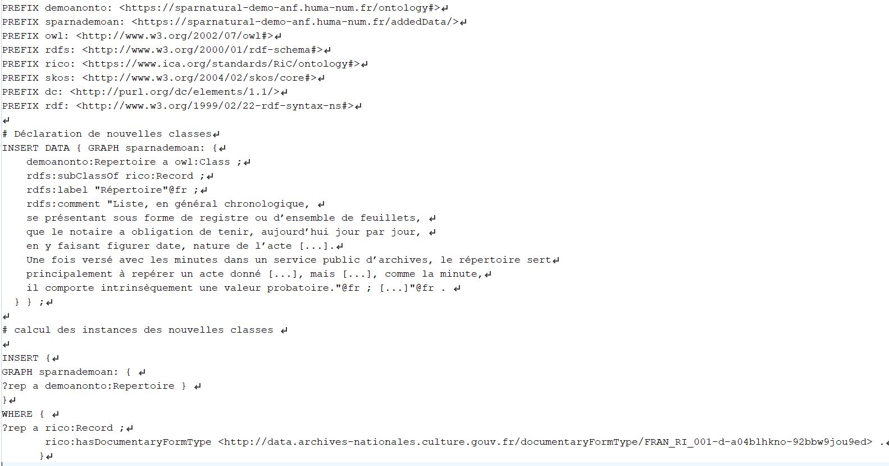
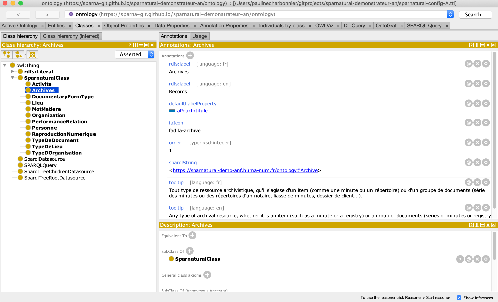
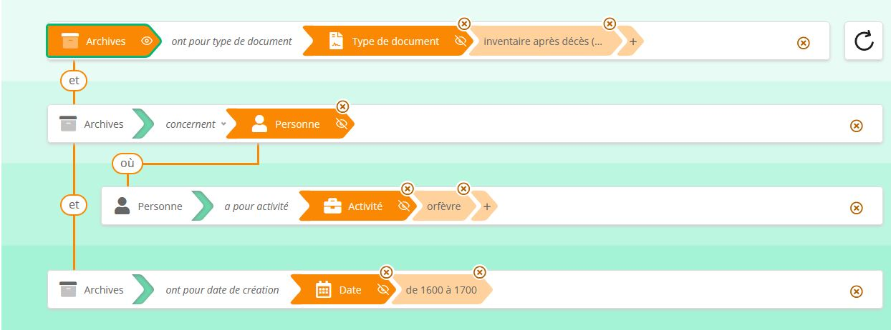
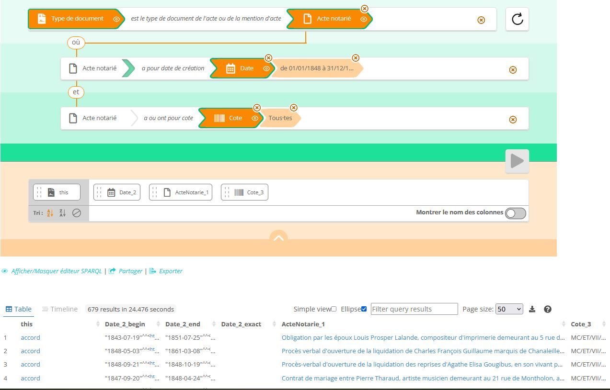

Date de la présente version : 23 août 2022.
La présente documentation sera
améliorée dans les prochaines semaines. Elle est placée sous licence Creative Commons « Attribution 4.0 international (CC-BY
4.0) » (https://creativecommons.org/licenses/by/4.0/deed.fr).
Ce démonstrateur a été réalisé dans le cadre du travail de développement, entre août 2021 et juin 2022, d’une nouvelle version de l’éditeur visuel open source de requêtes SPARQL Sparnatural, pour lequel le ministère de la Culture français, la Bibliothèque nationale de France et les Archives nationales se sont associés afin de passer un marché avec la société Sparna, développeur principal de Sparnatural.
Ce démonstrateur, qui utilise Sparnatural dans sa version actuelle, est le résultat d’un travail exploratoire sur la transition des
métadonnées archivistiques vers des graphes de données, qui fait suite aux projets de
preuve de concept qualitative PIAAF (publié en février 2018) et de développement du logiciel RiC-O Converter (version 1.0 publiée en avril 2020). L’enjeu
principal du projet était de proposer aux utilisateurs une interface de recherche
pertinente et compréhensible pour explorer un graphe de métadonnées archivistiques de
taille significative, qui en exploite la nature.
Objectifs
Le travail de développement de la version actuelle de Sparnatural a été réalisé par l’équipe projet - c’est-à-dire des représentants des trois institutions partenaires et la société Sparna - dans le but d’apporter des réponses aux questions générales suivantes :
- Comment valoriser un graphe de connaissances en tant que graphe de connaissances ?
(et non pas derrière un moteur de recherche à facettes ou derrière des liens
de navigation cliquables)
- Comment favoriser les interactions exploratoires (essai/erreur) des utilisateurs
pour partir à la découverte des données ?
- Comment réconcilier des modèles conceptuels génériques avec les points de vue
spécifiques des utilisateurs ?
Du point de vue des Archives nationales, le démonstrateur des Archives nationales devait en particulier servir :
- à tester les évolutions de Sparnatural, et par là-même à contribuer au travail de développement ;
- à mettre en place une toute première application web permettant d’interroger et de consulter une partie significative des métadonnées archivistiques de l’institution, converties en RDF/RiC-O.
Ce faisant, il s’agissait aussi pour nous :
- d’apporter la preuve que la sémantisation à grande échelle de métadonnées archivistiques “classiques” est possible, et que cela ouvre de nouvelles possibilités de recherche aux utilisateurs
- de voir ce qu’une telle opération permet d’apprendre sur ces métadonnées
- de construire une méthodologie et d’acquérir des compétences sur la mise en œuvre de Sparnatural, susceptibles de servir dans le cadre d’autres projets.
Ces travaux s’inscrivent dans le cadre d’une stratégie globale d’évolution des métadonnées et du système d’information des Archives nationales vers des métadonnées de meilleure qualité, plus accessibles, et des graphes d’entités liées.
Le contenu actuel du démonstrateur
Les métadonnées des Archives nationales ce sont aujourd’hui principalement :
- plus de 30 000 instruments de recherche archivistiques (encodés conformément à la DTD XML/EAD 2002),
- plus de 15 400 notices d’autorité (encodés conformément au schéma XML/EAC-CPF) sur des producteurs,
- et des vocabulaires servant à l’indexation de ces fichiers,
pour décrire environ 375 km linéaires d’archives papier de tous types, sans compter
les archives nativement numériques. La salle des inventaires
virtuelle permet aux utilisateurs de faire des recherches dans l’ensemble de ces
métadonnées.
Étant donné cet important volume, dans le cadre de ce projet, en l’absence
d’application sémantique comme data.bnf.fr et
compte tenu des moyens humains et financiers disponibles, il a fallu sélectionner un
sous-ensemble de ces métadonnées pour alimenter le démonstrateur Sparnatural.
Le processus de production du graphe de données
Les métadonnées sélectionnées ont été converties en graphes de données liées, conformément au
nouveau modèle conceptuel Records in
Contexts (RiC-CM) et à sa transposition technique, l’ontologie Records in Contexts-Ontology (RiC-O, version 0.2 publiée en
février 2021).
La conversion a été opérée à deux reprises dans le cadre du projet d’amélioration de Sparnatural. La première itération a été réalisée en
novembre 2021, la deuxième en mai 2022, après avoir tiré diverses leçons de la
première et des premiers travaux de configuration du démonstrateur.
Pour effectuer la conversion des fichiers XML/EAD et XML/EAC-CPF, nous avons utilisé
le logiciel open source RiC-O Converter, développé pour les Archives nationales en
2019 et disponible sur GitHub depuis avril 2020. RiC-O Converter produit des fichiers
RDF conformes à RiC-O 0.1. Les fichiers obtenus ont donc ensuite été rendus conformes
à RiC-O 0.2 et un peu enrichis ou modifiés par des scripts spécifiques écrits par le
Lab. Parmi les enrichissements et modifications opérés, mentionnons : la propagation de
la relation de provenance depuis la description de chacun des fonds sur la description de
l’ensemble des ressources archivistiques incluses dans ce fonds, la catégorisation (avec la propriété rico:hasDocumentaryFormType et le référentiel des types de documents) des instances de rico:RecordResource identifiables comme étant des répertoires, listes d’actes et mentions d’actes ; le remplacement des relations d’association entre études et
notaires par des relations plus précises d’appartenance.
Les vocabulaires et
notices utilisées pour indexer les fichiers EAD et EAC-CPF ont été convertis grâce des
scripts dédiés, écrits et utilisés par le Lab.
Enfin, une fois importé dans la base
RDF choisie pour le démonstrateur (actuellement, une instance du logiciel libre
GraphDB Free, configurée de façon très simple), le graphe de données a été à nouveau
enrichi, afin de créer des classes spécifiques aux archives notariales et de “peupler”
ces classes par inférence. La copie d’écran ci-desous en montre un exemple : il s’agit des requêtes SPARQL qui ont servi à ajouter dans la base RDF la classe demoanonto:Repertoire et à créer les instances de cette classe. Autrement dit, une ontologie étendant RiC-O 0.2 a été
produite et mise en œuvre. Même si ce travail n’était pas indispensable, il a beaucoup
facilité la conception des configurations du démonstrateur et a aussi permis
d’optimiser son fonctionnement en réduisant le temps d’exécution de certaines
requêtes.

Exemple de requête SPARQL de création de classe dans le graphe.
Éléments statistiques concernant le graphe RDF obtenu
Le graphe obtenu compte actuellement environ 57,9 millions de triplets RDF, dont
environ 37 millions de triplets inférés. On peut donc d’ores et déjà estimer que le
graphe RDF résultant de la sémantisation, selon les mêmes modalités, de l’ensemble des
métadonnées des archives notariales aux Archives nationales compterait environ 170
millions de triplets. Par ailleurs, rappelons que les quelques 4900 instruments de
recherche du DMC constituent à peu près 16 % du nombre total d’instruments de recherche. Même
s’il faut se garder d’extrapolations simplistes, et s’il faut notamment avoir en tête
que ces fichiers EAD sont parmi les plus indexés et les plus précis des Archives
nationales, il est désormais prouvé que la sémantisation de l’ensemble des métadonnées
XML de l’institution produirait un jeu de données extrêmement massif.
Ce jeu de données est la première opération de sémantisation (conversion en triplets RDF conformément à RiC-O) à grande échelle, réalisée par
les Archives nationales (et en France sauf erreur), de métadonnées archivistiques "classiques". Précisons qu’un autre jeu de données moins massif a par
ailleurs été publié en décembre 2021 par le Lab des Archives nationales (dans un dépôt public sur
GitHub) ; ce jeu de données est également accessible via le SPARQL endpoint du projet ALEGORIA).
Dans ce jeu de données, sont employées, parmi les composants définis dans RiC-O 0.2
:
- 34 classes (catégories d’entités) sur 106 (48 en comptant les triplets inférés)
;
- 25 datatype properties (relations dont la cible est une chaîne de caractères) sur
62 (28 en comptant les triplets inférés) ;
- 79 object properties (relations dont la cible est une entité) sur 423 (162 en
comptant les triplets inférés).
Des requêtes SPARQL exécutées directement dans le SPARQL endpoint de la base RDF
utilisée afin de s’affranchir de la limite des 1000 résultats fixée pour l’interface
Sparnatural donnent les effectifs suivants pour les principales catégories d’objets
décrits dans le graphe :
- 72 665 groupes de documents (fonds, séries, liasses, dossiers de clients…) ;
- 400 570 actes notariés (décrits à ce jour) au sein des liasses ;
- 104 383 mentions d’actes relevées au sein des répertoires ;
- 3135 répertoires ;
- 13 127 listes d’actes au sein des répertoires, dont 11 670 numérisées ;
- 629 246 personnes (dont 3 213 personnes dotées d’un IRI) ;
- 530 organismes (dont 528 dotés d’un identifiant) ;
- 15 559 lieux (dont 15463 dotés d’un IRI).
Nous inclurons très prochainement dans la présente documentation un diagramme donnant un aperçu global du modèle de données du graphe.
Comme nous l’expliquons ci-après, si les quantités trouvées pour les actes notariés,
les mentions d’actes et les listes d’actes sont à considérer comme une bonne
approximation (étant donné les raisonnements assez fiables que nous avons tenus pour générer les
données), les effectifs trouvés pour les personnes et pour les répertoires ne sont pas
fiables et peuvent uniquement être considérés comme des ordres de grandeur. Cependant ces
statistiques, telles quelles et à elles seules, montrent à notre sens l’intérêt des
technologies employées (car il est impossible à l’heure actuelle de les obtenir
via la Salle des inventaires virtuelle pour un utilisateur final, et assez peu aisé de les calculer pour un
professionnel compétent dans le domaine des technologies XML). Elles montrent
surtout, si tant est qu’il faille encore la prouver, la très grande richesse de ces
gisements archivistiques.
Nous allons poursuivre le travail sur ces données, comme expliqué ci-dessous.
Nous avons pour l’instant mis en place un dépôt privé sur GitHub pour y déposer et
y mettre à jour le jeu de données RDF. N’hésitez pas à nous contacter si vous
souhaitez disposer d’un accès à ce dépôt ou d’une copie de ce jeu de données.
Les interfaces d’exploration du graphe
Choix et méthodes de conception
Plusieurs options de configuration de Sparnatural sont possibles : configuration via
un Google spreadsheet ou via une ontologie OWL (voir la documentation). Le Lab a choisi de
configurer le démonstrateur via une ontologie, avec l’aide de Sparna, et en utilisant
le logiciel libre Protégé pour éditer
l’ontologie.

Édition d’une classe Sparnatural dans Protégé.
L’ontologie de configuration d’une interface de recherche Sparnatural importe et
utilise des composants définis dans deux ontologies génériques incluses dans le code
source du logiciel.
Il s’agit en fait de spécifier un modèle ontologique pour
la recherche et ses correspondances avec les classes et propriétés de l’ontologie
métier.
Cette approche permet de retenir certaines catégories d’objets ou
de relations plutôt que d’autres jugées secondaires pour la recherche, d’en spécifier
de nouvelles - pour regrouper plusieurs composants existants afin de simplifier
l’exploration du graphe ou pour représenter des nœuds de type texte -, de leur donner
des libellés compréhensibles dans la langue qu’on souhaite, de définir un ordre
d’affichage pour les points d’entrée principaux, de spécifier comment les nœuds cibles
d’une relation s’affichent, d’exploiter des vocabulaires SKOS, etc. Si l’on connaît HTML, les données contenues dans le graphe, le modèle métier employé et sa mise en œuvre, SPARQL et
le langage OWL, on peut donc construire et faire évoluer son interface de façon
autonome.
Le but pour le Lab a donc été d’atteindre par ce biais un compromis raisonnable entre
la complexité du modèle métier et la nécessité de produire une interface
compréhensible et performante pour les utilisateurs. Il a fallu beaucoup de temps pour parvenir au
résultat actuel, par itérations successives. Les retours des utilisateurs pendant les
deux ateliers organisés fin 2021 ont été à cet égard précieux et ont véritablement
orienté à la fois les développements du logiciel et les choix que nous avons
faits.
Le travail de configuration des interfaces de recherche a aussi permis de tester les
fonctionnalités développées dans le cadre du projet d’évolution de Sparnatural,
notamment :
- le support de la clause OPTIONAL (ce qui facilite la découverte, la granularité et
la précision des données étant variable dans un graphe de métadonnées culturelles,
en particulier dans un graphe de métadonnées archivistiques) - nous avons utilisé cette possibilité pour de nombreuses relations, par ex. "a une copie numerique", “a pour intitulé”, “concerne” ;
- le support de FILTER NOT EXISTS (pour exprimer la négation d’une propriété) - nous avons également retenu cette possibilité dans les mêmes cas que pour OPTIONAL ;
- la possibilité de sélectionner des valeurs dans une liste arborescente (de type
thésaurus) - nous avons utilisé cette fonctionnalité pour permettre la sélection
dans le thésaurus des types de documents ;
- la possibilité d’ajouter des aides contextuelles (tooltips) - nous avons ainsi pu attacher à chacune
des catégories d’entités utilisables dans l’interface une courte définition utile
dans le contexte du projet ;
- la possibilité de pré-enregistrer des requêtes, afin de guider l’utilisateur dans ses
premières requêtes ;
- la possiblité de choisir les colonnes à afficher dans les résultats - cela permet à l’utilisateur de
définir à sa guise le contenu de la liste de résultats, pour pouvoir immédiatement
disposer de données textuelles (plutôt que les seules URIS des entités qu’une
requête SPARQL classique retourne par défaut), opérer des tris et ensuite en faire
un export au format CSV ;
- la possibilité de traduire l’interface en autant de langues que nécessaire - nous avons
ainsi pu pour l’instant décliner en français et en anglais les interfaces de
recherche du démonstrateur des Archives nationales.
Résultats
Avertissements
Le démonstrateur est uniquement constitué de deux interfaces de recherche et de la
présente documentation. Les Archives nationales ne disposent pas, comme la BnF (avec
data.bnf.fr), de site web permettant de consulter les graphes de données. Une
fonctionnalité a donc été ajoutée au démonstrateur Sparnatural, pour associer à chaque
entité résultat une page permettant de consulter de façon simple sa description (via
l’application Lodview). Cette fonctionnalité n’est pas totalement optimale. Par
ailleurs les IRIs des ressources RDF ne sont actuellement pas déréférençables ; en
particulier, aucune page web n’est associée à ces IRIS, dont nous ne pouvons pas non
plus garantir la pérennité du segment racine
(http://data.archives-nationales.culture.gouv.fr/).
Les résultats obtenus présentent encore quelques petits défauts techniques que nous
nous efforcerons de corriger. Par ailleurs, nous sommes bien entendu preneurs de toute
remarque ou suggestion d’amélioration. Nous avons conscience qu’après les ateliers
utilisateurs organisés fin 2021, ces interfaces doivent être mises à l’épreuve d’un
plus grand nombre d’usagers. Tout comme les données RDF interrogées, les interfaces
sont susceptibles d’évoluer de façon significative.
Configuration A
La première configuration (démonstrateur A) est simple et
généraliste ; elle peut quasiment s’appliquer à tout jeu de données archivistiques
conformes à RiC-O, dans la mesure où s’y trouvent indexées des entités de contexte
comme les producteurs, des agents sujets des documents, des lieux. Elle est a priori plutôt destinée à la découverte des métadonnées.
Les principales catégories d’objets (classes) définies dans l’ontologie de
configuration et utilisables dans cette première interface sont :
- Archives (une classe spécifique au projet, qui rassemble toutes les ressources
archivistiques, donc toutes les instances de la classe RecordResource de RiC-O, à
l’exception des instruments de recherche et notices d’autorité) ;
- Personne (qui correspond à la classe rico:Person) ;
- Organisme (qui correspond à la classe rico:CorporateBody) ;
- Lieu (qui correspond à la classe rico:Place) ;
- Type de document (classe des concepts SKOS définis dans le vocabulaire des types
de documents des Archives nationales, également instances de la classe
rico:DocumentaryFormType)
- Mot-matière (classe des concepts SKOS définis dans le vocabulaire des
mots-matières des Archives nationales, également instances de la classe
rico:Thing)
- Activité (classe des concepts SKOS définis dans le vocabulaire des professions et
fonctions des personnes des Archives nationales, également instances de la classe
rico:OccupationType)
- Reproduction numérique (les instances de la classe rico:Instantiation ayant le
format JPEG, générées à partir des éléments daogrp des fichiers EAD)
- et d’autres ‘entités’ associées, qui correspondent à des valeurs littérales de
propriétés RiC-O : date, intitulé, nom.

Une requête préenregistrée de l’interface de recherche A : les inventaires après décès d’orfèvres au XVIIe siècle
Configuration B
La deuxième configuration (démonstrateur B) exploite les
spécificités des archives notariales. Elle est a priori plutôt adaptée aux besoins
d’une personne familière de cet univers, archiviste ou usager habitué. C’est la
configuration qui a fait l’objet du plus grand nombre de modifications dans l’histoire
du projet.
Outre les catégories d’objets listées plus haut, cette configuration
définit et utilise de nouvelles catégories d’objets, et établit pour ces catégories
d’objets des correspondances avec des classes de l’ontologie étendant RiC-O mentionnée
plus haut :
- Ensemble de documents (qui correspond à la classe rico:RecordSet), Répertoire,
Liste d’actes, Acte notarié, Mention d’acte, Cote ;
- Étude notariale, Numéro d’étude notariale, Notaire ;
- Quartier, paroisse ou arrondissement de Paris, Voie de Paris, Édifice parisien, Adresse.
La plupart de ces entités sont utilisables dès le début de l’écriture d’une requête.
De nouvelles relations sont également présentes, par exemple entre étude et
notaires (Notaire appartient à Étude), entre notaires (Notaire a pour
successeur ou a une relation familiale avec Notaire), entre ressources archivistiques (comme Répertoire
inclut ou mentionne Mention d’acte ou Acte notarié).
Bilan
Le démonstrateur comme dispositif d’exploration et de recherche
Le bilan est très positif en ce qui concerne les possibilités d’exploration du graphe
et les nouvelles possibilités de recherche offertes par Sparnatural.
Parmi les
principaux points relevés par les utilisateurs pendant les ateliers de novembre 2021,
une fois passé l’effet de surprise, on peut mentionner le caractère à la fois intuitif, souple
et interactif de ce type d’interface, qui demande aussi un plus grand engagement
intellectuel pour l’utilisateur que de remplir un classique formulaire de recherche.
L’utilisateur construit son questionnaire en choisissant parmi les options qui
s’offrent à lui et découvre le contenu du graphe en même temps qu’il construit cette
recherche ; il prend véritablement la main. Il lui est également facile de revenir en
arrière en annulant une étape puis la précédente. Enfin, il peut partager la requête
exécutée ou encore exporter les résultats de sa recherche.
Nous ne pouvons bien évidemment pas nous substituer à l’usager non archiviste, ni à
celui qui ne connaît pas du tout le modèle de données RiC-O. Nous souhaitons juste
présenter ici un exemple des recherches qu’un formulaire de recherche classique dans des fichiers EAD ne permet actuellement pas de faire, et que Sparnatural rend possibles. Cet exemple est celui de la troisième requête préenregistrée dans l’interface de recherche B.

Une requête préenregistrée de l’interface de recherche B : les types de documents des actes notariés datant de l’année 1848, avec l’indication de leurs cotes
Dans cet exemple, on voit tout d’abord que le point d’entrée est une entité de contexte (Type de document), ce qui est rare actuellement dans nos interfaces de recherche archivistiques dans lesquelles le focus est la pupart du temps placé d’entrée de jeu sur les documents d’archives. L’éditeur de requêtes permet ensuite de choisir une catégorie d’entité (ici, le choix s’est porté sur les actes notariés) liée au type de document avant de parcourir de proche en proche le graphe, sur la même page HTML, et en restant dans le contexte de la construction d’un questionnaire (sans avoir à travailler par rebond entre des résultats de recherche qu’on aurait donc dû consulter et dans lesquels on aurait alors cliqué sur des lien hypertexte, pour savoir à quoi on peut s’attendre). On pourrait s’intéresser ainsi au producteur (notaire ou étude) des actes notariés. Une telle question, même si elle n’est pas formulée en langage naturel, nous semble proche de la formulation que pourrait en faire un chercheur en histoire qui souhaiterait, par exemple, constituer un corpus et s’en faire une première idée. Une des particularités notables ici est aussi que l’utilisateur peut, pour de nombreuses relations, soit sélectionner précisément la cible, soit demander toutes les cibles d’une relation donnée (ici, tous les actes notariés, ou toutes les dates), au moins dans un premier temps. La possibilité de déterminer quelles informations figurent dans le tableau de résultats, et de disposer dans ce tableau de valeurs textuelles (libellés des entités), pas seulement d’URIs, est également particulièrement précieuse. Enfin, l’utilisateur peut facilement modifier son questionnaire par étapes, ou encore partager la requête et enregistrer le lien dans ses propres fichiers, afin de rejouer la requête ultérieurement.
Les limites fonctionnelles du démonstrateur sont essentiellement celles de
Sparnatural. La première, déjà mentionnée plus haut, est qu’il s’agit d’un outil
permettant de construire une interface d’exploration et de recherche dans un graphe de
données RDF, pas d’afficher, pour les consulter, les données listées dans les tableaux
de résultats. De plus, les Archives nationales ne disposent pas encore de moyen de
déréférencer des URIS. La fonctionnalité d’affichage de page HTML réalisée à l’aide de
Lodview ne remplace bien évidemment pas un véritable travail de conception et de
design d’une interface de consultation, permettant aussi de visualiser des parties du
graphe obtenu, dans la lignée de ce que le prototype PIAAF proposait pour une quantité
bien moins importante de données. Ce n’était pas l’objet du travail accompli dans le
cadre de ce projet.
Une telle interface de recherche n’est par ailleurs pas exclusive d’autres dispositifs tels que recherche
“plein texte” permettant, à partir du mot ou de l’expression saisis, de disposer d’une
liste de suggestions donnant pour chacune d’entre elles le type d’entité concerné ; ou
d’options de navigation de type onglets (un onglet par catégorie d’entités) comme le
propose également le prototype PIAAF.
S’ajoute bien évidemment à ces limites le fait que le jeu de données retenu n’offre
pas une couverture homogène des fonds d’archives des 40 premières études notariales :
le travail d’analyse des actes notariés conservés au sein de ces fonds se poursuit au
DMC, comme dans les autres fonds.
Le graphe RDF obtenu, un exemple d’utilisation à grande échelle de RiC-O
Le résultat de la conversion à grande échelle des données sources en XML/EAD et
XML/EAC-CPF en RDF conforme à RiC-O a montré clairement :
- que cette conversion est tout à fait possible sans forcément apporter de
modifications à ces données ;
- que le graphe obtenu en partant de métadonnées archivistiques classiques de ce
type offrira cependant d’autant plus de points d’entrée différents et sera d’autant
plus riche en nœuds (en entités de divers types) que les métadonnées source
emploient des référentiels (notices d’autorité, vocabulaires) pour décrire les
entités de contexte des archives ;
- que, même en partant de métadonnées bien indexées, une telle opération n’utilisera
qu’un sous-ensemble des classes et propriétés de RiC-O - ce qui est normal puisque
RiC-O est la transposition technique d’un cadre conceptuel global ;
- que, tout en n’employant qu’une partie réduite de RiC-O, mener à bien un tel
projet peut inciter, notamment dans le cas d’un ensemble archivistique homogène
comme le nôtre, à étendre cette ontologie, celle-ci étant un modèle international
très générique qui ne peut prendre en compte la variété des corpus ni toutes les
spécificités et besoins locaux.
De tels enseignements peuvent, nous semble-t-il, être utiles à toute institution ou
équipe qui envisagerait de suivre la même voie. Nous serions bien évidemment
intéressées par tout retour d’expérience comparable.
Une nouvelle perspective sur les métadonnées utilisées
À ce stade précoce du travail sur les métadonnées que le démonstrateur permet
d’explorer, nous l’avons déjà dit plus haut, nous disposons grâce aux technologies
sémantiques de nouveaux éléments quantitatifs sur le contenu des archives décrites.
Nous pourrons affiner cette cartographie dans les prochains mois.
Par ailleurs,
comme dans tout projet de production et de publication de graphe d’entités liées à
partir de données préexistantes, où un saut plus ou moins important est fait en
précision, le travail sur les données et leur exploration en tant que graphe ont mis
en lumière des problèmes dans les métadonnées sources, certes non inconnus mais
jusqu’ici très peu visibles et difficiles à quantifier. Nous allons prendre ici deux
exemples.
629 246 personnes dans le graphe ?
L’indexation essentiellement libre, via l’élément EAD <persname>, des personnes (mis
à part pour 3213 d’entre elles dotées de notice d’autorité) dans les instruments de
recherche traités a pour résultat un nombre très important d’entités de type
rico:Person dans le graphe, sur lesquelles on ne sait souvent que peu de choses
(ainsi par ex., on connaît l’activité de 34 925 de ces personnes uniquement) et qui
n’ont pas été l’objet de travaux d’agrégation ou d’identification. De fait, des
entités possédant le même nom ne peuvent être agrégées comme une seule entité
Personne dans ce graphe d’entités liées que si on a la certitude absolue ou la
quasi-certitude qu’il s’agit de la même personne physique - lorsque, par exemple, on
retrouve cette personne à peu près à la même date, avec la même mention de
profession ou fonction (ou de relations avec d’autres personnes), dans les actes du
même notaire ou mentionnant le même bien. Cela constitue un champ d’investigation
très intéressant. Quels qu’en soient les résultats, il devrait subsister une cohorte
très importante d’individus aux caractéristiques très floues, dont l’effectif ne
devrait pas être très différent du nombre initial.
3135 répertoires ?
Ce nombre est, lui, nettement supérieur à la réalité documentaire observée. Il résulte du fait que
dans les instruments de recherche traités, il figure le plus souvent deux descriptions
(deux éléments EAD <c> entre lesquelles aucune relation n’est actuellement établie),
créées dans deux instruments de recherche différents, relatives au même répertoire. L’un des instruments de recherche concernés décrit le fonds d’un
notaire donné, donc ses répertoires - et parfois, des mentions d’actes dans les
répertoires - et minutes ; l’autre, produit dans le cadre du programme de
numérisation intégrale des répertoires, décrit les répertoires du notaire en tant qu’objets matériels et les
listes d’actes qu’il contient. Cette redondance est assez peu visible dans les
métadonnées source dans la salle des inventaires virtuelle ; elle l’est beaucoup
plus dans le graphe RDF.
Un travail d’analyse plus poussé nous a conduites à décider de réaliser, dans les prochains mois, un test sur un petit échantillon représentatif de ces instruments de recherche, de mise en
relation voire fusion des informations qu’ils contiennent, pour produire, dans
l’idéal, une seule description de chacun des répertoires. Cet exemple est très
représentatif d’autres cas de figure, liés au temps long dans lequel s’inscrit
l’histoire des métadonnées des Archives nationales et au phénomène de stratification
des instruments de recherche.
Autres résultats concrets du projet
La préparation des données RDF pour le démonstrateur Sparnatural a permis de réaliser
un travail préalable à la mise à jour de RiC-O Converter, au cours duquel les
différentes actions à mener à bien ont été identifiées et codées une première fois. Ce
travail permettra de gagner un peu de temps pour la suite. En effet, nous prévoyons de
développer une deuxième version de RiC-O Converter, afin de le rendre compatible avec
la version 0.2 de RiC-O.
La traduction en français des libellés anglais des classes et propriétés RiC-O
utilisées dans le graphe, réalisée lors de la configuration du démonstrateur
Sparnatural, va être intégrée dans les sources de RiC-O afin de disposer d’une
traduction complète à terme.
En guise de conclusion : perspectives
Dans une possible suite du projet, il est notamment envisagé de fusionner en une
seule les deux configurations A et B, en hiérarchisant classes et propriétés, pour
laisser le choix à l’utilisateur, au sein d’une seule interface de recherche, d’une
exploration rapide ou plus précise (par exemple sélectionner Personne > Notaire dans
une seule interface). Cela impliquera de faire évoluer les possibilités de
configuration offertes par Sparnatural.
Le Lab des Archives nationales prévoit de produire et publier une ontologie de recherche Sparnatural
générique pour les données RDF conformes à RiC-O en prenant pour point de départ la
configuration A.
Enfin, le Lab des Archives nationales est désormais en mesure de concevoir seul une
interface de recherche Sparnatural pour d’autres jeux de données. La réutilisation de
Sparnatural est donc prévue dans le cadre d’autres projets de recherche, par exemple
pour explorer les données du projet ORESM
(Œuvres et Référentiels des Etudiants, Suppôts et Maîtres de l’université de Paris au
Moyen Âge). Voir à ce sujet la présentation, faite en novembre 2021, de la preuve de concept déjà réalisée.